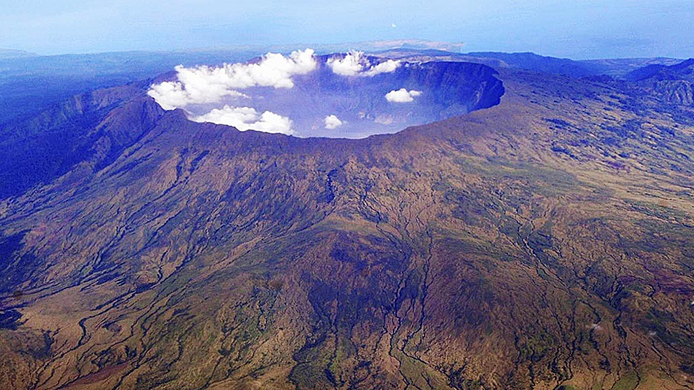
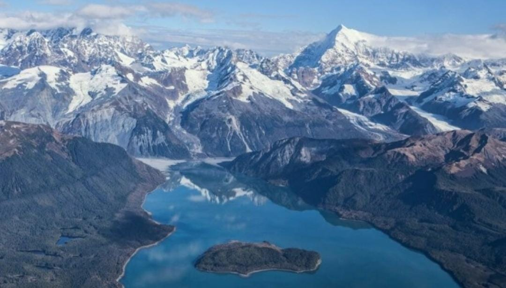
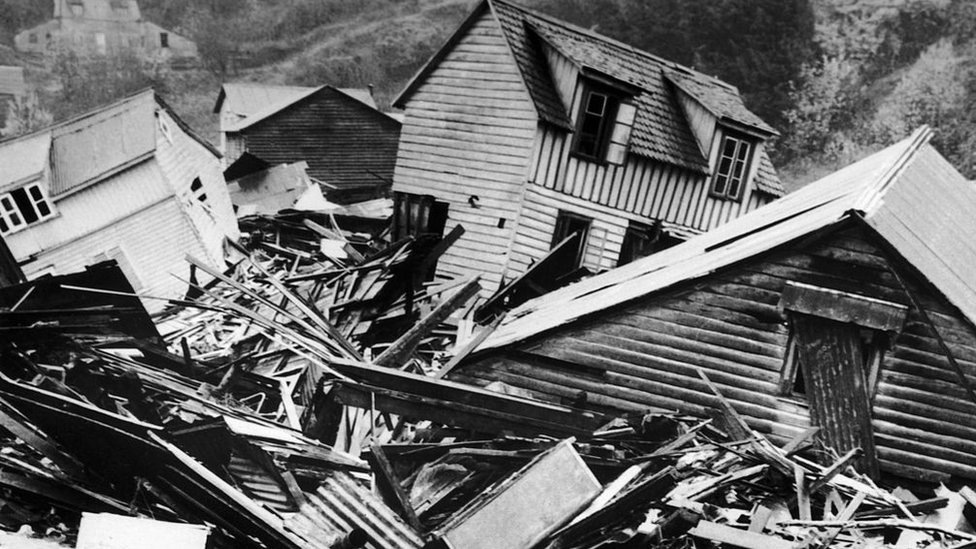
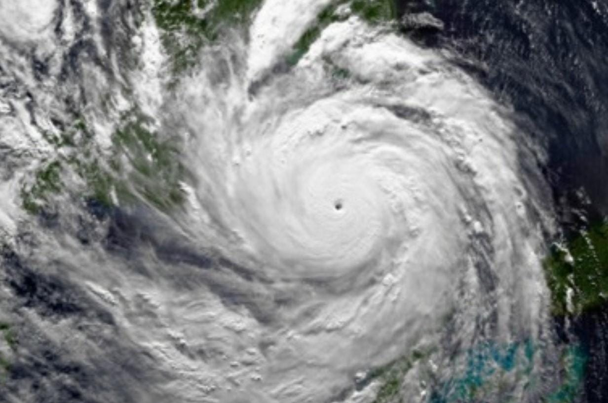

El monte Tambora
Existieron multiples erupciones de volcanes a lo largo de toda la historia de la humanidad. La mayoria de las mas devastadoras de categoria VEI 8 y VEI 7 fueron hece miles de años pero, hace 200 años ocurrio la ultima erupcion volcanica de categoria VEI 7 mas reciente a la epoca actual. El nombre de este volcan es el Monte Tambora de 1815 en Indonesia.
El Monte Tambora se encuentra en la isla de Sumbawa, en el archipiélago de Indonesia, en el sudeste asiático. Indonesia se encuentra en una región tectónica conocida como el Cinturón de Fuego. En ella, varias placas tectónicas interactúan y la mayoria se hunden debajo de otras en un proceso denominado subducción.

La altura (actual) del volcan alcanza los 2850 metros sobre el nivel del mar, sin embargo se estima que Tambora pudo alcanzar aproximadamente los 4.000 metros de altura antes de la erupcion, esto lo sabemos gracias a las reconstrucciones geologicas que se le hicieron al volcan. La erupcion causo que la cima del volcan colapse dejando una enorme caldera, aun asi no debe interpretarse que toda la diferencia de altura corresponde a una simple capa de roca que salió disparada, la expulsión de magma, el vaciamiento parcial del sistema y el colapso de la estructura superior contribuyeron a la formación de la caldera.
El volcan ya presentaba actividad antes de la gran erupcion. Devido a la epoca no se conose con presicion cual fue el evento que fue preparando al Tambora a hacer erupcion, las estimaciones indican que lo mas provable fue una subsuccion entre dos placas que favoreció la formación de magma, que podía ascender y acumularse en el sistema del volcan. A lo largo del tiempo se fueron acumulando gases en la camara magmatica, generando una gram precion que no hacia mas que aumentar. Hasta que en un momento, mas expecificamente en Abril de 1815 el volcan no soporto mas y se proboco la erupcion. La retirada del material del sistema contribuyó a la formación de la caldera. El magma del Tambora tenía una composición que incluía traquiandesitas y materiales relacionados, esta composición química, la cantidad de gases y la actividad del sistema contribuyeron a que la erupción fuera explosiva.
Devido a la investigacion cientifica se cree que la primera fase explosiva ocurio al rededor de 5 de abril de 1815 y que entre el 10 y el 11 de abril del mismo año, ocurrieron las fases colminantes de la explocion pero tambien las mas devastadoras . Durante toda esta fase el Tambora libero gases, cenizas, fragmentos volcanicos, magma, y flujos piroclasticos (una mezcla de gases volcánicos calientes, ceniza, rocas, que desciende por las laderas de un volcán durante una erupción explosiva)
La erupción del monte Tambora es considerada una de las mayores erupciones volcánicas explosivas documentadas. Se estima que la columna de gases, cenizas y fragmentos volcánicos alcanzó aproximadamente los 40 kilómetros de altura, mientras que el volumen de material expulsado se calcula en alrededor de 160 km³, aunque estas cifras pueden variar según el método de estimación. La caída de cenizas se extendió por una enorme región, cubriendo las islas de Sumbawa, Lombok, Bali, sectores de Java, partes del sur de Borneo, entre otros. Además, los flujos piroclásticos devastaron las zonas cercanas al volcán, especialmente la península de Sanggar, y llegaron al mar por distintos sectores.
La erupción del Tambora no solo provocó una enorme destrucción en Indonesia. También alteró temporalmente el clima mundial y contribuyó a una de las anomalías climáticas más conocidas de la historia: el año sin verano de 1816. Tambora liberó grandes cantidades de gases volcánicos, entre ellos dióxido de azufre. Parte de este gas alcanzó las capas altas de la atmósfera, donde contribuyó a la formacion de diminutas partículas llamadas aerosoles de sulfato. Estas partículas dispersaron parte de la radiación solar, reduciendo la energía que llegaba a la superficie terrestre y favoreciendo un enfriamiento temporal del planeta.
Estas anomalías perjudicaron las cosechas, contribuyeron a la escasez de alimentos y provocaron aumentos en los precios de los productos agrícolas. Los efectos no fueron iguales en todas las regiones. Sin embargo, las investigaciones científicas relacionan la erupción con importantes anomalías de temperatura y precipitaciones durante los años siguientes. Se estima que la catástrofe causó alrededor de 60.000 muertes, aunque la cifra exacta es incierta. Una parte de las víctimas murió durante la erupción, mientras que muchas otras fallecieron posteriormente por el hambre y las enfermedades asociadas con la pérdida de cultivos y el deterioro de las condiciones de vida.
En el Índice de Explosividad Volcánica (VEI) la erupcion del Monte Tambora alcanzo:
- El nivel: 7 (Super Colosal)
- El tipo de la erupcion: (explosiva y de gran magnitud)
- Todo el material expulsado: (gases, cenizas, fragmentos de roca, magma, etc)
- La altura de la columna eruptiva: (se estima que fue de 40km)
- El volumen del material explusado: (más de 100 km³ de material en superficie)
Megatsunami de Bahia lituya
Los tsunamis por lo general solo llegan a medir al rededor de 10 o 15 metros de altura, por otra parte existen fenomenos como las olas monstruo que pueden alcanzar los 25 o inluso los 30 metros de altura. Sin embargo estos ejemplos se quedan cortos si los comparamos contra el Mega Tsunami de la Bahia de Lituya, ya que esta catastrofealcanzo los aterradores 524 metros, siendo considerado el record absoluto de los tsunamis (hasta donde tenemos registro).

La Bahía de Lituya, ubicada en Alaska Estados Unidos, presentaba un paisaje montañoso, con laderas empinadas, bosques y sectores de vegetación próximos a la costa. La zona ya tenía una geografía escarpada, especialmente alrededor de Gilbert Inlet, donde posteriormente se produjo un enorme desprendimiento de rocas. La Bahia tenía una profundidad media de unos 220 metros en su cuerpo principal, mientras que su entrada o umbral estrecho era muy poco profunda, con apenas unos 10 metros.
Por lo general, la inmensa mayoría de los tsunamis nacen en lo profundo del océano debido a movimientos tectónicos que deforman el fondo marino. Cuando un terremoto submarino provocan una subduccion, eleva o hunde el lecho del mar, empuja toda la columna de agua que tiene encima y genera ondas gigantescas que viajan cientos de kilómetros antes de romper contra la costa. El evento de la bahía de Lituya fue una impresionante excepción a esta regla porque no se originó bajo el agua ni por el movimiento del fondo marino. En su lugar, el fenómeno fue provocado por el colapso de una parte de la montaña.
El 9 de julio de 1958 por la noche en Alaska, ocurio un teremoto de magnitud estimada de entre 7,8 y 8,3 sobre la falla de Fairweather. La tierra comenzó a temblar violentamente, el movimiento se sintió en una amplia zona del sudeste del estado. En la bahía de lituya el temblor afectó las empinadas laderas que rodeaban el agua y una enorme masa rocosa cayó desde una ladera hacia Gilbert. Los estudios estiman que el volumen del desprendimiento fue de unos 30 o 40 millones de metros cúbicos. Al caer, la masa de roca desplazó una enorme cantidad de agua. Se generó una ola de impacto que avanzó por la bahía y trepó por las montañas cercanas destrozando todo a su paso. La energía se concentró en un espacio relativamente estrecho y la forma de la bahía y las montañas que la rodean influyeron en la manera en que el agua se desplazó.
El agua alcanzó una elevación máxima de aproximadamente 524 metros en una ladera opuesta al lugar del desprendimiento. Arrancó árboles, erosionó el terreno y dejó una franja visible que todavía sirve para estudiar la altura alcanzada por el agua. La ola se propagó a lo largo de la bahía, destruyó sectores de bosque, afectó embarcaciones y a las especies de animales que vivian por la zona. Esta informacion de fue reconstruyendo gracias a los pocos testigos que vieron lo que paso y los propios daños que proboco el tsunami.
Después del desastre, amplios sectores del paisaje quedaron gravemente dañados. Las áreas afectadas pasaron de ser bosques oscuros y tupidos a convertirse en laderas de roca desnuda y gris. Todavía hoy, décadas después, se distingue claramente una línea perfecta (la llamada trim line) que separa los árboles viejos que se salvaron en la parte alta de los bosques más jóvenes y bajos que volvieron a crecer con los años en la zona devastada. Aunque el fenómeno fue de una magnitud extraordinaria, sus efectos se concentraron principalmente en la propia bahía. No hubo una gran cantidad de victimas humanas devido a lo remoto que era la zona. Igualmete esto no impidio que el Megatsunami se alla llevado entre 2 a 5 vidas de algunas personas que estaban por la zona en el momento de la catastrofe. Varias embarcaciones resultaron afectadas y algunos sectores de la costa perdieron su vegetación, grandes extensiones de bosque quedaron destruidas, con árboles arrancados y terreno erosionado.
En la escala de Sieberg Ambraseys, el megatsunami de la Bahia de Lituya alcanzo y supero el nivel IV:
- El nivel: VI (Desastroso)
- Altura: 524 metros
- Potencia de la ola: Arrazo con todo lo que teia al frente con una fuerza destructiva
- Descripcion del impacto: Afecto de sierta manera la vegetacion posterior a la catastrofe
El Terremoto de Valdivia
En el vasto catálogo de desastres naturales que han afectado a la humanidad, los terremotos son unos de los mas frecuentes y los causantes de diversas catastrofes naturales como los tsunamis. Pero si huvo un terremoto que destaco sobre el resto en la era moderna, ese fue el Terremoto de Valdivia de 1960. Se conoce como el sismo de mayor magnitud jamás registrado en la era moderna. No solo se trató de una tragedia de alcance local, sino que se trato de un fenómeno de proporciones globales cuyas ondas expansivas, alteraciones geográficas y tsunamis transoceánicos dejaron una marca imborrable en la memoria en la historia.

Chile ya contaba con una importante experiencia en terremotos destructivos y había comenzado a incorporar normas de construcción antisísmica. Sin embargo la preparación era desigual, algunas construcciones incorporaban criterios de resistencia sísmica, mientras que otras eran más vulnerables debido a su antigüedad o las características del terreno. Además, los sistemas de alerta y respuesta ante emergencias eran mucho más limitados que los actuales.
El 22 de mayo de 1960 se desencadenó en el sur de Chile el terremoto de mayor magnitud jamás registrado en la historia moderna, alcanzando los 9.5 MW en la escala de magnitud de momento. El fenómeno se originó por un gigantesco proceso de subducción en el Cinturón de Fuego del Pacífico, donde la placa de Nazca se deslizó de forma abrupta por debajo de la placa Sudamericana. Este choque masivo provocó la ruptura de una franja de cientos de kilómetros de longitud, con estimaciones que se acercan a los 1.000 kilómetros. La sacudida fue extraordinariamente prolongada. Algunos registros y testimonios históricos describen varios minutos de movimiento intenso, aunque la duración exacta depende del lugar y de qué se considere como el comienzo y el final del temblor, se estima que pudo ser entre 8 a 10 minutos.
Como consecuencia directa del terremoto, cuando se produjo la ruptura tectónica, partes del fondo marino se elevaron y otras se hundieron. Ese desplazamiento repentino modificó la posición de una enorme masa de agua situada encima. El agua comenzó a propagarse en forma de una serie de ondas por el océano Pacífico. Al aproximarse a las costas, las ondas cambiaron de comportamiento y pudieron alcanzar alturas mucho mayores de hasta 20 o 25 metros (segun las estimaciones y dependiendo del lugar), convirtiendose en tsunamis que chocaria por toda la costa Chilena.
El impacto material y humano fue devastador y de proporciones históricas. En Chile, el terremoto y los posteriores tsunamis destruyeron por completo ciudades como la de Valdivia, donde cerca del 40% de las estructuras colapsaron, hubo grandes daños en caminos y comunicaciones, por lo que muchas comunidades quedaron aisladas y tuvieron dificultades para recibir ayuda, modificaron permanentemente la geografía al hundir grandes extensiones costeras bajo el agua, bloquearon cauces de ríos y desencadenaron la violenta erupción del volcán Puyehue. Sin contar que paises como Hawai, japon, Filipinas fueron afectados por algunos tsunamis devido al terremoto y las ondas que viajaban por el fondo marino. En términos de pérdidas humanas, las estimaciones oficiales calculan que alrededor de 1600 perdieron la vida. Y sin contar que miles de personas perdieron sus hogares.
El terremoto de Valdivia, es uel mas fuertes registrados en en la escala de Magnitud de Momento (Mw):
- Nivel MW: 9.5
- Categoria: Catastrofica
- Energia liverada: 1,1 x 10^19 joules (segun estimación)
- Efectos aproximados: Ciudades, edificios, casa, caminos,etc, quedaron destruidos despues del terremoto. Sin contar los tsunamis que impactaron por todo el pais, inundando las costas y causando mas destrozos, dejo cientos de muertos.
El Huracán Gilbert
Normalmente cuando un ciclón tropical toca tierra, va perdiendo su energia hasta terminar de desaparecer. Pero el huracán Gilbert desafió esta norma con una escala y perseverancia fuera de lo común. Su descomunal tamaño, el enorme radio de sus vientos y la dinámica de las corrientes de alta presión en la atmósfera superior, permitieron que se extienda por regiones del Caribe, Mexico y EEUU.
A comienzos de septiembre de 1988, una onda tropical cálida que emergió de la costa occidental de África. Al desplazarse hacia el oeste sobre las aguas hipercalentadas del Océano Atlántico tropical, el sistema comenzó a organizarse hasta convertirse en un ciclón tropical.

No fue hasta el 8 de septiembre donde fue identificado como una depresión tropical y al día siguiente, recibió el nombre de Gilbert. Las condiciones del océano favorecieron su desarrollo. Las aguas cálidas proporcionaban humedad y energía, mientras que los vientos de las capas superiores de la atmósfera permitían que el sistema mantuviera una estructura organizada. De esta manera, Gilbert comenzó a intensificarse rápidamente, transformándose en un huracán el 10 de septiembre.
Durante su recorrido por el mar Caribe, Gilbert se aproximó a diferentes islas y territorios habitados. Jamaica, una isla del Caribe fue una de las primeras regiones en sufrir directamente su enorme fuerza. Aunque existían sistemas de pronóstico meteorológico, la magnitud que alcanzaría este Huracan no tenia precedentes, convirtió su llegada en una amenaza extraordinaria, a pesar de ser considerado en esos momentos como un huracan de categoria 3. Los fuertes vientos, las lluvias torrenciales y la elevación del nivel del mar podían afectar tanto a las poblaciones costeras como a las comunidades del interior. Los cultivos, las viviendas, las carreteras y las redes de comunicación quedaron expuestos a un fenómeno que continuaba ganando intensidad.
Sin embargo, lo más sorprendente ocurrió después de que Gilbert abandonara Jamaica. En lugar de debilitarse de manera considerable, encontró nuevamente condiciones favorables sobre el mar Caribe y comenzó a intensificarse a una velocidad extraordinaria. El fenómeno experimentó una intensificación explosiva al pasar sobre aguas excepcionalmente cálidas, reduciendo su presión central a unos 888 millibares y alcanzando la categoría 5 con vientos sostenidos de hasta 298 km/h.
El 14 de septiembre, Gilbert llegó a la península de Yucatán, en México. Al avanzar sobre la península, Gilbert comenzó a perder intensidad. Esto se debió principalmente a que dejó de recibir directamente la energía y la humedad de las cálidas del Caribe. Además, el rozamiento con el terreno y las características de la superficie terrestre alteraron la circulación del huracán. Aun asi emergió sobre el golfo de México, donde encontró nuevamente una extensa superficie de agua cálida. Al regresar al mar, el agua cálida y la humedad del océano reabastecieron a Gilbert de energía mediante la evaporación y liberación de calor latente, lo que reorganizó su circulación y le permitió recuperar fuerza. Por esto, aunque Gilbert se había debilitado al cruzar Yucatán, volvió a convertirse en un huracán importante mientras avanzaba hacia el noreste.
El 17 de septiembre, el huracan ya se había debilitado considerablemente. Posteriormente, sus restos atmosféricos continuaron desplazándose hacia Texas y Oklahoma, en Estados Unidos, donde todavía produjeron lluvias intensas y contribuyeron a generar inundaciones. El 19 de septiembre, el sistema terminó fusionándose con otro sistema meteorológico sobre el centro de Estados Unidos, perdiendo definitivamente su identidad como ciclón tropical. El huracan Gilbert y su historia demuestra que la peligrosidad de un huracán no depende únicamente de la velocidad de sus vientos. También influyen su tamaño, la cantidad de lluvia que produce, la elevación del nivel del mar y la extensión de su recorrido. Las estimaciones históricas más citadas contabilizan alrededor de 318 fallecidos en los distintos territorios afectados, aunque las cifras pueden variar según la fuente y los criterios utilizados. En total estubo activo durante aproximadamente once días, desde su formación como depresión tropical el 8 de septiembre.
Si utilizamos la Escala Saffir-Simpson los datos del huracan Gilbert quedarian de esta forma:
- Categoria maxima: 5
- Velocidad del viento: En su punto máximo registró vientos sostenidos de hasta 298 km/h
- Principales daños: Provoco daños catastróficos generalizados, inundaciones masivas tierra adentro, dejando zonas completamente aisladas y sin electricidad por largos periodos.
Incendios forestales de Australia
Los incendios forestales son un fenómeno devastador por su impredecibilidad, su velocidad de propagación y la extrema dificultad para controlarlos. Cuando a estos factores se le suman temperaturas extremas, vientos secos, un exceso de vegetación combustible y la escasez de fuentes de agua cercana. Esto fue exactamente lo que ocurrió en Australia entre 1974 y 1975, cuando múltiples focos de fuego arrasaron el centro del país, extendiéndose sin control y dejando a su paso una de las mayores huellas de destrucción de la historia moderna.

Australia cuenta con un clima predominantemente árido y semiárido en su vasto interior, caracterizado por temperaturas elevadas, sequías prolongadas, mientras que sus franjas costeras presentan condiciones templadas en el sur y tropicales en el norte. Sin embargo, en los años previos a la temporada de 1974-1975, este patrón habitual se vio drásticamente afectado. Durante 1973 y inicios de 1974, Australia recibió lluvias excepcionalmente abundantes en varias regiones del interior. Esto favoreció un crecimiento considerable de la vegetación, sobre todo de las hierbas y otras plantas pequeñas. Los terrenos que normalmente podían parecer secos y poco cubiertos llegaron a tener una cantidad mucho mayor de vegetación.
A finales de 1974, las lluvias disminuyeron y llegó un período más seco. Las hierbas y las plantas que habían crecido abundantemente comenzaron a secarse. La mayoria permanecieron en el suelo, formando una cubierta continua de material vegetal seco. Esto provoco que en lugar de tener pequeños sectores separados por terreno desnudo, había grandes extensiones de material vegetal (muy incendiable) donde el fuego podía extenderse con facilidad. Ademas las condiciones meteorológicas del verano austral se complementaron con intensos vientos cálidos y secos provenientes del centro continental.
No existe una única causa que explique el origen de todos los incendios de aquella temporada. Las causas variaron entre focos y no se conocen con precisión para cada uno. Sin embargo hay dos explicaciones muy provables, los primeros son las tormentas que pueden provocar incendios cuando un rayo alcanza vegetación seca y las condiciones permiten que las llamas continúen propagándose. La segunda opcion es que fue la propia actividad humana, algunos incendios pudiero ser iniciados intencionalmente, incluidos casos relacionados con las actividades de productores rurales. Los registros históricos señalan que la mayoría de los focos se atribuyeron a rayos, aunque no es posible asignar con seguridad un origen concreto a cada incendio de la temporada.
Los incendios no comenzaron todos en el mismo lugar ni en el mismo momento. Se trató de numerosos focos que aparecieron en diferentes sectores del territorio australiano durante varios meses. Los primeros grandes incendios de esta temporada se registraron en junio de 1974, especialmente en dos regiones del Territorio del Norte como Barkly Tableland y el distrito del río Victoria. Posteriormente, se produjeron nuevos brotes de fuego durante los meses siguientes, mientras las condiciones secas avanzaban por el resto del pais. A medida que avanzó la temporada seca, se registraron incendios en sectores de Australia Occidental, Australia Meridional, Queensland y Nueva Gales del Sur.
El fuego se propagó principalmente por la superficie, alimentándose de las extensas praderas, los matorrales y las hierbas que habían crecido tras las lluvias. El viento también pudo favorecer la propagación, acelerando las llamas y transportando partículas encendidas que podían originar nuevos focos. Al final los incendios quemaron una superficie estimada de 117 millones de hectáreas, equivalente a aproximadamente el 15 % del territorio del país. Aun asi solamente se estiman que 6 personas murieron a causa de las llamas.
Los incendios fueron perdiendo fuerza cuando disminuyo el material vegetal, los cambios en el viento, el regreso de las lluvias en determinadas zonas, el aumento de la humedad y las labores de contra incendios realizadas por las personas. Hacia febrero de 1975, la temporada había llegado a su fin en varias de las regiones afectadas, aunque los incendios no se extinguieron todos simultáneamente. Durante los meses posteriores, distintas zonas comenzaron a recuperar su vegetación, mientras que las comunidades rurales tuvieron que afrontar la pérdida de ganado, cultivos e infraestructuras. La recuperación fue gradual y dependió de las condiciones de cada región.
En el Índice Meteorológico de Peligro de Incendios estoa incendios forestales, podrian considerarse de escala FWI:
- Codigo: FWI
- Nombre: Fire Weather Index (Índice Meteorológico de Incendios)
- Clasificación estimada (Extremo): Estos incendios afectaron en pocos meses al 15% de todo un pais, quemando y consumiendo todo a su paso